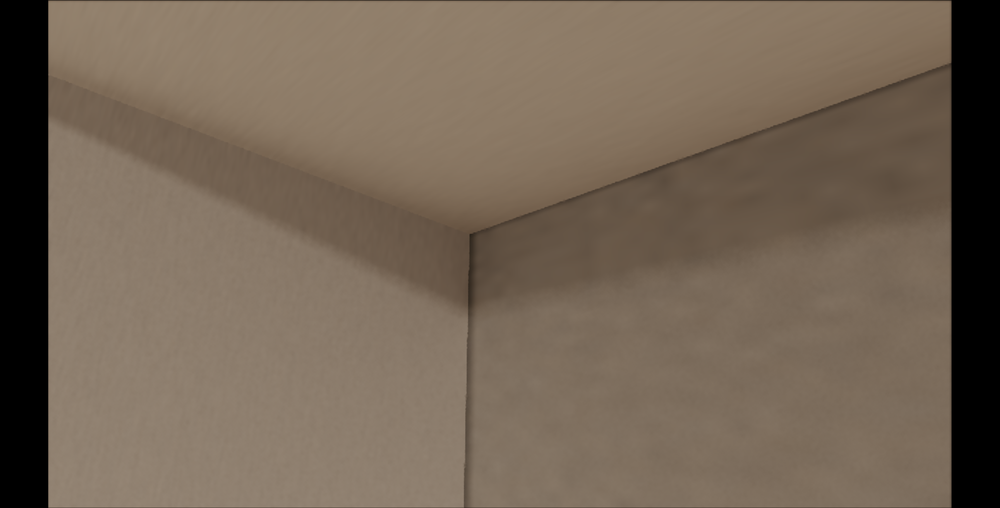
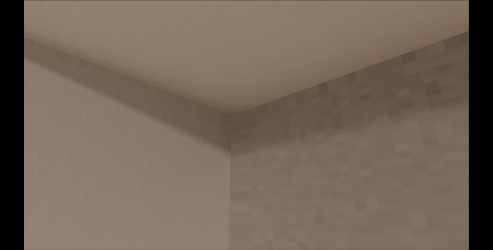

ROI 1 D1 Uniform Gate 結果報告（CODEX版）
D1 命中
D1 override 把 ROI 1 anchor grid 的 1013|1016 邊界 pair 清掉，且 5% 安全檢查通過。
1. 核心數字
| baseline z max | 3.056 |
|---|---|
| override z max | 2.7 |
| baseline 1013|1016 pair | 11 |
| override 1013|1016 pair | 0 |
| baseline max luma step | 0.1327 |
| override max luma step | 0.0729 |
| 5% safety ratio | 0.00%（0/778） |
2. 同視角 A/B 截圖

uR7310C1WestWallBeamShadowZMaxOverride = 3.056
uR7310C1WestWallBeamShadowZMaxOverride = 2.73. 判讀
baseline 在 ROI 1 anchor grid 有 1013|1016 pair；override 後此 pair 變成 0。這表示 z max gate 打到 OPUS sanity check 找到的黑線機制。
安全檢查使用 dense samples 中 baseline 或 override targetId 為 1013 的點。luma delta 大於 0.10 的比例是 0.00%。門檻是小於 5%。
4. 結論邊界
D1 仍是診斷。若要變成正式修法，下一步要把這個 gate 轉成更完整的 ownership policy，並用同視角檢查 ROI 1 之外的西牆、樑底面、西南柱交界。
5. JSON 摘要
{
"result": {
"d1DiagnosticStatus": "hit",
"baselinePairCount": 11,
"overridePairCount": 0,
"baselineMaxStep": 0.13269403108805417,
"overrideMaxStep": 0.07291122304499148,
"routePairRemoved": true,
"lumaStepImproved": true,
"safetyPass": true,
"routePairBefore": {
"1013|1016": 11
},
"routePairAfter": {
"1003|1016": 11
},
"summary": "D1 override 把 ROI 1 anchor grid 的 1013|1016 邊界 pair 清掉，且 5% 安全檢查通過。"
},
"safety": {
"definition": "dense samples where baseline or override targetId is 1013",
"westWallEffectiveSampleCount": 778,
"changedPixelCount": 0,
"changedPixelRatio": 0,
"maxLumaDelta": 0.033790625916421416,
"meanLumaDelta": 0.0036412838203971434,
"threshold": {
"lumaDelta": 0.1,
"changedPixelRatio": 0.05
},
"routeChanges": {
"1013>1003": 778
},
"status": "pass"
},
"package": ".omc/r7-3-10-west-join-d1-gate/20260520-215946"
}